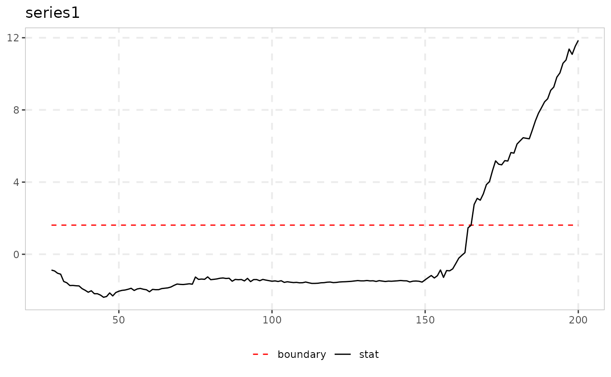
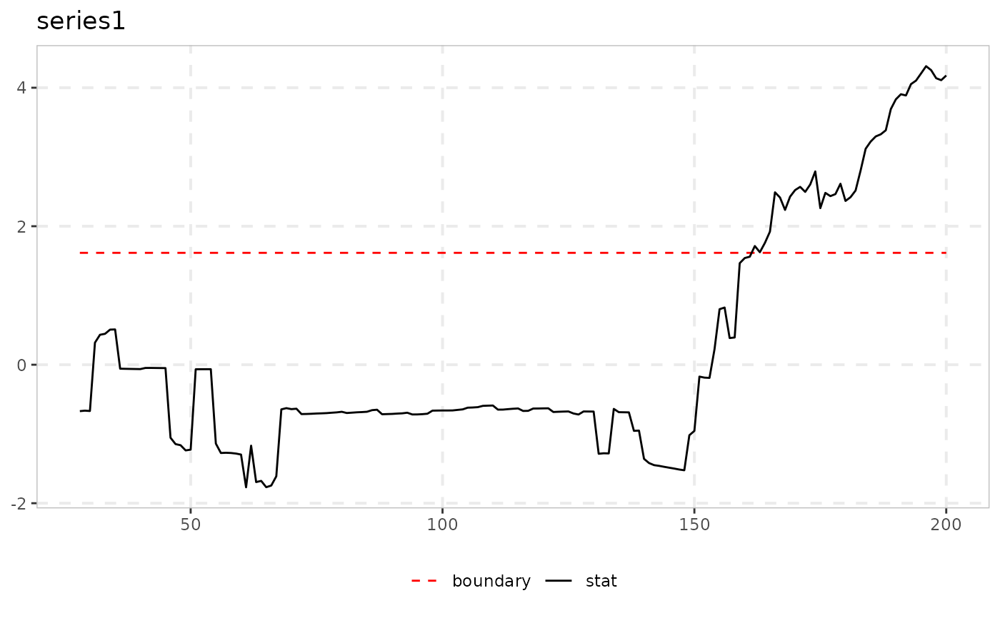

QPWY Recursive Quantile Monitoring (Wu, Shi & Wu 2025)
Source:R/monitor_quantile.R
monitor_quantile.Rdmonitor_quantile implements the QPWY real-time monitoring strategy of
Wu, Shi & Wu (2025): a quantile-regression (QR) analogue of PWY's own
recursive ADF t-statistic, testing at a chosen conditional quantile
tau over an expanding window [1, r] (start fixed at the
beginning of the sample, exactly radf's own badf
convention) rather than quantile_test's single
full-sample test.
Arguments
- data
A univariate or multivariate numeric time series object, a numeric vector or matrix, or a data.frame. A column may have leading and/or trailing
NAvalues (an uneven/unbalanced panel where series enter or exit the sample at different times) – those periods are filled withNAinbadf/bsadfand excluded from that series'adf/sadf/gsadf. InteriorNAvalues (a gap in the middle of a series) are not supported. When any series is padded this way, the panel statistic (bsadf_panel/gsadf_panel) is not available and is returned asNA, with a warning.- tau
Quantile to test at, in
(0, 1)(fixed, unlikequantile_test's"optimal"grid search – WSW's own eq. 25 takestauas a given parameter for the monitoring statistic, not re-selected at each recursion point).- minw
A positive integer. The minimum window size (default = \((0.01 + 1.8/\sqrt{T})T\), where T denotes the sample size).
- nrep
Number of Monte Carlo replications for the boundary.
- sig_lvl
Significance level, one of
90,95,99.- seed
Optional seed for the Monte Carlo draws.
Value
An object of class monitor_quantile_obj: a list with the
statistic path stat, the (flat) boundary, the estimated
delta, and alarm/alarm_date (the first breach,
NA if none).
Details
Only QPWY (single recursion) is implemented, not the paper's
own QPSY (double recursion, additionally optimizing over the
window start): QPWY_r(tau) needs O(T) actual quantile
-regression fits (no closed-form recursive update the way OLS has),
tractable at the same cost order as radf()'s own badf;
QPSY needs O(T^2) such fits, a substantially larger
undertaking left unimplemented.
The critical value is simulated per call: QPWY_r(tau)'s
limiting null distribution at each r is sqrt(1 - delta^2)
* z + delta * Q_{0,r}, with z ~ N(0, 1), delta a
data-estimated correlation coefficient (as in
quantile_test), and Q_{0,r} exactly radf()'s
own badf sequence under a simulated null path – reusing
radf() directly for the simulation rather than new theory. A
single flat boundary is used (not one value per r):
controlling the first-crossing false-alarm rate requires calibrating
against each simulated path's own supremum, exactly how
radf_mc_cv's own sadf_cv is constructed, not a
per-r marginal quantile (which would badly inflate the
false-alarm rate).
Note
The critical value (boundary) is simulated internally on every
call (via an unexported helper, qpwy_boundary_sim) – there is
currently no reusable/exported cv counterpart for this function (a
known, separately-tracked gap, not addressed here).
Returns its own class (not radf_obj), so it does not plug into
summary()/\link{datestamp}/tidy; it has its own print() and
autoplot() methods instead. Prints its own
statistic/boundary/delta summary – see
vignette("naming-and-analysis", package = "exuber") for the full
picture of which functions do and don't fit that pipeline.
![[Experimental]](figures/lifecycle-experimental.svg)
References
Wu, R., Shi, S., & Wu, J. (2025). Quantile analysis for financial bubble detection and surveillance. Journal of Time Series Analysis, 46(5), 908-931.
See also
quantile_test for the static, full-sample
version of this test. monitor for the OLS-based
monitoring alternative.
Other monitoring:
monitor(),
monitor_cusum(),
monitor_lbi()
Examples
# \donttest{
# Heavy-tailed (t3) innovations, explosive from t = 150 to the sample end
y <- sim_psy1(n = 200, te = 150, tf = 200, seed = 7,
e = sim_innov(199, dist = "t", df = 3))
res <- monitor_quantile(y, tau = 0.5, nrep = 100, seed = 1)
print(res)
#>
#> ── monitor_quantile (n = 200, minw = 27, tau = 0.5, sig_lvl = 95%) ─────────────
#>
#> series delta boundary alarm alarm_date
#> series1 0.623 1.53 164 164
#>
autoplot(res)
#> Warning: Removed 1 row containing missing values or values outside the scale range
#> (`geom_segment()`).

# Upper-quantile monitoring is typically more powerful for right-tailed bubbles
autoplot(monitor_quantile(y, tau = 0.9, nrep = 100, seed = 1))
#> Warning: Removed 1 row containing missing values or values outside the scale range
#> (`geom_segment()`).

# }